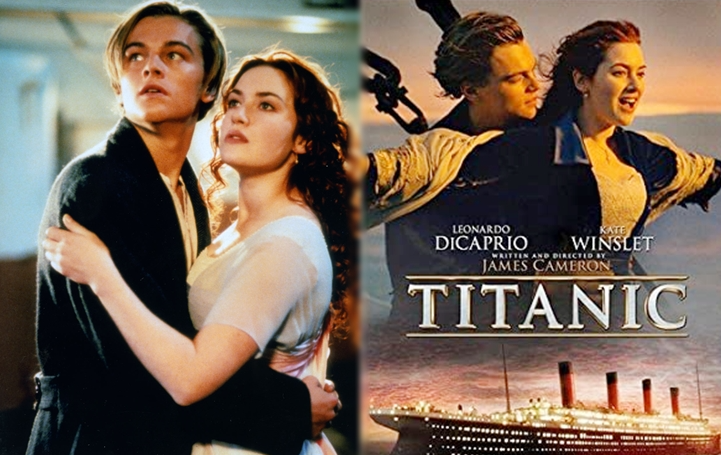
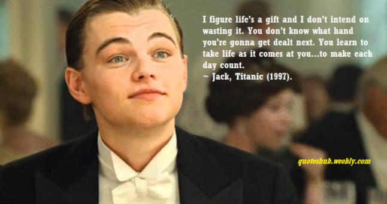
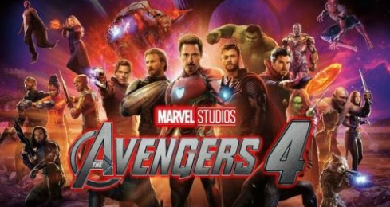
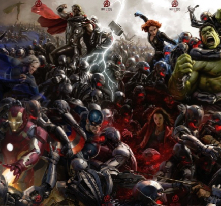
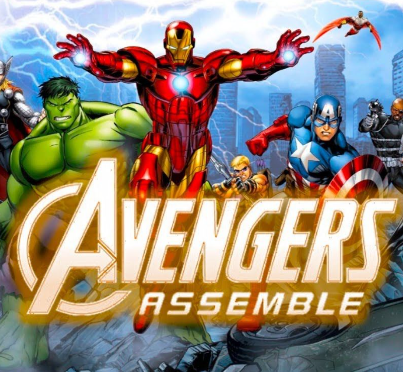
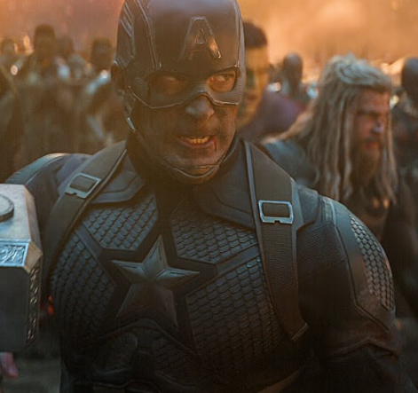

첫 번째 영화로 제가 소개할 영화는 바로 "타이타닉"입니다.

줄거리
우연한 기회로 티켓을 구해 타이타닉호에 올라탄 자유로운 영혼을 가진 화가 잭(레오나르도 디카프리오)은
막강한 재력의 약혼자와 함께 1등실에 승선한 로즈(케이트 윈슬렛)에게 한 눈에 반한다.
진실한 사랑을 꿈꾸던 로즈 또한 생애 처음 황홀한 감정에 휩싸이고, 둘은 운명 같은 사랑에 빠지는데… -네이버 영화
사실 타이타닉처럼 남녀와의 사랑을 다룬 영화는 굉장히 많습니다 . 다만 제가 이 영화가 인상깊었던 이유는 잭이 했던 한마디 때문입니다.
"To make it count, to make each day count"
순간을 소중히 하자는 의미입니다. 귀족 집안의 딸인 로즈는 정해진 규칙과 정해진 삶 속에서 살아갑니다. 반면 잭은 하루하루를 하늘에 맡기고 살아갑니다. 잭은 인생이 행복한 이유는 하루하루가 예측 불가능하며, 누굴 만날지도 모르고, 어딜 갈지도 모르기 때문이라고 말합니다. 인생은 축복이고, 낭비하면 안되며 항상 옆에 있다는 것을 명심해야 한다고 말합니다.

저는 잭의 이런 말이 가슴에 와 닿았고, 오늘 하루는 사소한 것에 짜증을 내느라 낭비하지 않았는지 다시 한번 되돌아보게 되었습니다. 그리고 제가 살아가고 있는 지금 이 순간을 소중히 하기 위해 오늘도 저는 열심히 살아가고 있습니다.
제가 소개할 두 번째 영화는 바로 "어벤져스4:엔드게임"입니다.

줄거리
인피니티 워 이후 절반만 살아남은 지구마지막 희망이 된 어벤져스 먼저 떠난 그들을 위해 모든 것을 걸었다! 위대한 어벤져스운명을 바꿀 최후의 전쟁이 펼쳐진다!
저의 MBTI는 ENTP입니다. 4개의 mbti중 공상과 망상을 즐겨하는 타입인 N은 저를 가장 잘 나타내는 단어라고 할 수 있습니다.
어벤져스는 초능력을 가진 히어로들이 지구를 지키는 이야기를 담은 영화입니다. 현실에서는 전혀 일어나지 않는 소재를 담았지만, 저는 히어로들이 자신의 능력을 이용하여 최선을 다해 싸우는 모습들이 너무 멋져 몰입을 하게 되었습니다. 특히 멋진 슈트를 입고 날아다니면서 펄스 캐논을 발사하는 아이언맨이 제일 멋지긴 하지만, 캡틴 아메리카나 헐크, 팔콘, 앤트맨등 다른 히어로들도 너무 멋있습니다. 저는 영화관에서 마블영화를 보고 난 뒤면, 항상 그들 사이에 껴서 싸우고 있는 저의 모습을 상상하곤 합니다. 이렇게 저는 마블영화를 좋아하고 진심으로 대하는 '마블'광이기에, '어벤져스4:엔드게임'은 저에게는 정말 의미있는 작품이라고 할 수 있습니다.
여러 장면들 중 제가 가장 인상깊었던 장면은 바로 캡틴 아메리카가 "Avengers Assemble"을 외치는 장면입니다. 어벤져스의 모든 히어로들과 타노스의 모든 군단들이 맞서 싸우러 가는 장면은 아직까지도 소름이 돋습니다. 앞으로 많은 영화들을 보겠지만, 제가 어벤져스4를 보면서 느낀 전율은 다시는 못 느낄 정도로 이 영화는 제가 큰 울림과 충격을 주었습니다.



앞으로 많은 영화들을 보겠지만, 제가 어벤져스4를 보면서 느낀 전율은 다시는 못 느낄 정도로 이 영화는 제가 큰 울림과 충격을 주었습니다. "어벤져스4:엔드게임"은 정말 잊지 못할 최고의 영화입니다.